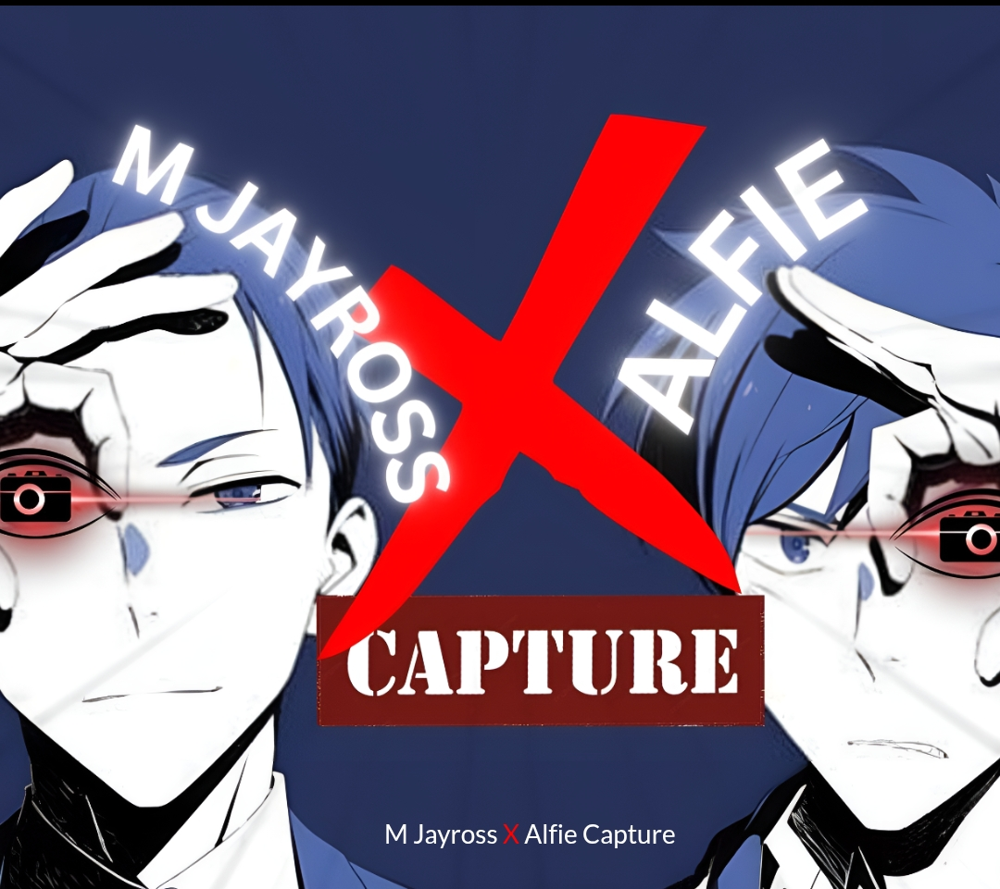

Photographer | Visual Storyteller | BSIS Student
From Davao del Norte, Philippines — Capturing the world through a digital lens. Freezing time through a shutter click to deliver polished, meaningful visual experiences.
Some of my works and practice projects.

A professional photography collection featuring event coverage, standalone portrait sessions, street capture, and creative perspective framing layouts.
View ProjectMy academic journey that builds my foundation in technology and information systems.
Davao del Norte State College
2025 - Present
Developing key expertise regarding visual asset systems, content management, administrative tech layouts, and data structural precision.